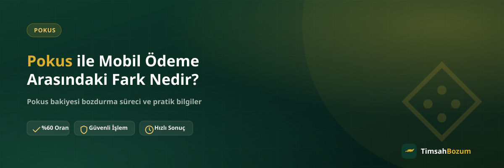

Pokus ve mobil ödeme, ikisi de bakiye tabanlı bozum hizmetleri arasında yer aldığı için sık sık birbirine karıştırılıyor. Oysa bakiyenin nereden geldiği, hangi platformda göründüğü ve bozdurma sürecinde nelere dikkat edilmesi gerektiği iki hizmette de farklı. Bu yazıda ikisi arasındaki temel farkları ve ortak noktaları netleştiriyoruz; hangi bilgiyi hazırlaman gerektiğini önceden bilmek, WhatsApp üzerinden başlattığın işlemi baştan hızlandırır.
Pokus ve Mobil Ödeme Bakiyesi Nedir?
Pokus, kullanıcıların uygulama içi bakiye yükleyip bu bakiyeyle çeşitli platformlarda ödeme yapabildiği bir sistem. Mobil ödeme ise operatör (Vodafone, Türk Telekom, Turkcell) üzerinden yapılan ve fatura veya kontör bakiyesine yansıyan bir ödeme yöntemi. Her ikisinde de kullanıcı önce bir bakiye biriktiriyor, sonra bu bakiyeyi harcıyor ya da bozduruyor. Farkı yaratan, bakiyenin hangi sistemde tutulduğu ve nasıl doğrulandığı.
Bakiye Nereden Görüntülenir?
Pokus bakiyesi kendi uygulaması veya hesabı üzerinden görüntülenirken, mobil ödeme bakiyesi operatörün kendi uygulamasından (örneğin BiP, TurkcellUM, Vodafone Yanımda gibi) veya fatura ekranından takip edilir. Bozum işlemi için paylaşman gereken ekran görüntüsü de bu yüzden hizmete göre değişiyor: Pokus için kendi bakiye ekranı, mobil ödeme için ilgili operatörün ekranı yeterli.
Kısmi Bozum İkisinde de Var mı?
Evet. Hem Pokus hem mobil ödeme bakiye tabanlı hizmetler olduğu için ikisinde de kısmi bozum mümkün. Yani bakiyenin tamamını bozdurmak zorunda değilsin, istediğin bir kısmını da nakde çevirebilirsin. Bu noktada Razer Gold veya iTunes gibi kod tabanlı hizmetlerden ayrılıyorlar; kod tabanlı hizmetlerde kodun tam değeri tek seferde değerlendirilir, kısmi bozum söz konusu değildir.
Oranlar Neden Farklı?
Güncel oran Pokus'ta %60, mobil ödeme tarafında ise operatöre göre değişiyor: Vodafone ve Türk Telekom'da %50, Turkcell'de doğrudan %30 ancak Paycell hesabın varsa Turkcell işlemi Paycell üzerinden %60 oranıyla yapılabiliyor. Oran farkı, hizmetin arka planındaki maliyet ve risk yapısından kaynaklanıyor. Oranlar piyasa koşullarına göre güncellenebildiği için işlem öncesi güncel oranı Pokus bozdurma veya mobil ödeme bozdurma sayfasından ya da WhatsApp'tan teyit etmek en doğrusu.
Hangi Bilgi Hazır Olmalı?
İki hizmette de süreç aynı mantıkla ilerliyor: güncel bakiyeni gösteren okunaklı bir ekran görüntüsü hazırlıyorsun, WhatsApp'tan bu bilgiyi paylaşıyorsun, oranı teyit ediyorsun ve onay sonrası ödeme WhatsApp üzerinden görüşülen yöntemle yapılıyor. Üyelik, form doldurma veya kimlik belgesi hiçbirinde gerekmiyor, hesabına erişim de istenmiyor.
Aynı Anda İki Hizmeti Bozdurabilir miyim?
Evet, hem Pokus bakiyen hem mobil ödeme bakiyen varsa ikisini de tek mesajda belirtmen süreci hızlandırır. Her bakiyenin ekran görüntüsünü ve tutarını ayrı ayrı paylaşman yeterli, oranlar hizmete göre ayrı ayrı hesaplanır ve ödeme tek seferde yapılır.
Hangisi Daha Güvenilir?
Güvenilirlik açısından iki hizmet arasında bir fark yok; ikisi de aynı süreçten, aynı doğrulama adımlarından geçiyor. Asıl dikkat edilmesi gereken nokta, işlemin yalnızca resmi WhatsApp hattı üzerinden yürütülmesi. Başka bir numaradan veya platformdan (Instagram DM gibi) gelen bir talebe bilgi paylaşmadan önce numarayı mutlaka doğrulamalısın. SMS doğrulama kodu hiçbir aşamada senden istenmez; böyle bir talep gelirse bu dolandırıcılık şüphesi taşır.
Ekran Görüntüsü Nasıl Olmalı?
Her iki hizmette de ekran görüntüsünün okunaklı ve güncel olması bekleniyor. Tutarın net göründüğü, tarihin veya bakiye sorgulama anının anlaşıldığı bir görüntü işlemi hızlandırır. Eski bir ekran görüntüsü veya kırpılmış, tutarı göstermeyen bir kayıt paylaşmak, bilginin yeniden istenmesine ve sürecin uzamasına yol açar. Bu yüzden bozdurmaya karar verdiğin anda taze bir ekran görüntüsü almak en pratik yöntem.
Bozdurma Sonrası Ödeme Nasıl İlerler?
Oran teyit edildikten ve bakiye bilgisi doğrulandıktan sonra ödeme adımına geçiliyor. Ödeme yöntemi WhatsApp üzerinde görüşülerek belirleniyor; bu adım Pokus ve mobil ödeme için farklılık göstermiyor, ikisinde de aynı akış izleniyor. Onay öncesinde herhangi bir taahhüt söz konusu değil, güncel oranı öğrendikten sonra işlemden vazgeçmek de mümkün.
Turkcell Mobil Ödeme de Aynı Mantıkla mı Bozduruluyor?
Turkcell mobil ödeme bakiyesi de Pokus gibi bakiye tabanlı bir hizmet ve kısmi bozum burada da geçerli. Tek fark, oranın hesaplanma şekli: Turkcell bakiyesi doğrudan bozdurulduğunda güncel oran %30, ama işlemi yapan kişinin Paycell hesabı varsa aynı bakiye Paycell üzerinden %60 oranıyla değerlendirilebiliyor. Bu yüzden Turkcell hattı olan ve aynı zamanda Paycell kullanan biri için hangi yöntemin daha avantajlı olduğunu WhatsApp'tan sorup öğrenmek mantıklı.
İkisini Karıştırınca Ne Gibi Hatalar Olur?
Pokus ve mobil ödemeyi karıştırmanın en sık görülen sonucu, yanlış ekran görüntüsünü paylaşmak. Örneğin operatör faturasını gösteren bir görüntüyü Pokus bakiyesi sanarak göndermek, ya da Pokus uygulamasındaki bakiyeyi mobil ödeme bakiyesiyle karıştırmak süreci gereksiz yere uzatıyor. Hangi hizmeti bozduracağını netleştirip doğru ekran görüntüsünü hazırlamak, bu tür karışıklıkların önüne geçen en basit adım.
Sık Sorulan Sorular
İlgili Yazılar
- Kod Tabanlı ve Bakiye Tabanlı Bozum Arasındaki Fark
- Pokus Bakiyesi Bozdurmadan Önce Kontrol Etmen Gerekenler
- Mobil Ödeme Bakiyesi Kısmi Bozdurulabilir mi?
Pokus veya mobil ödeme bakiyeni bozdurmak istediğinde tek yapman gereken güncel ekran görüntünle birlikte WhatsApp hattımıza yazmak; hangi hizmet olduğunu belirttiğinde süreç aynı hızda ilerler.